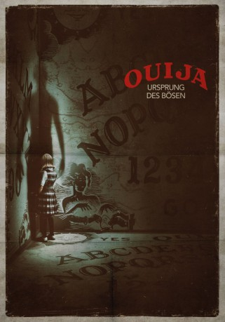
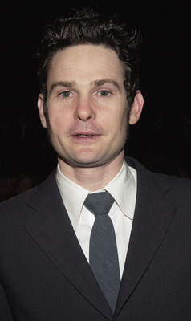
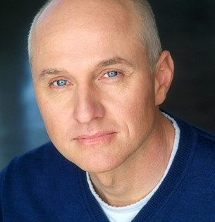

#5565 Ouija 2 - Ursprung des Bösen
 
 IMDB-Wertung: 6.2 / 10
IMDB-Wertung: 6.2 / 10  Metascore: 0
Metascore: 0 
Los Angeles 1965: Die verwitwete Alice Zander (Elizabeth Reaser) lebt zu den Hochzeiten der wilden 60er mit ihren beiden Töchtern Paulina und Doris (Annalise Basso und Lulu Wilson) in der kalifornischen Millionen-Metropole. Ihren Lebensunterhalt verdient Alice damit, Ahnungslosen mit ihrem Ouija-Spielbrett, und mit der Hilfe ihrer Töchter, die volle Ladung Dämonen-Spuk vorzuschwindeln. Der Spaß ist allerdings sehr schnell vorbei, als Alice bei einer Séance unfreiwllig einen echten Geist zu sich einlädt, der Besitz von der jüngsten Tochter Doris ergreift. Und dieser ist alles andere als harmlos. Zeit für Mutter und Tochter, sich unvorstellbaren Ängsten zu stellen, um die Jüngste der Familie zu retten und das Böse zurück auf die andere Seite zu schicken.
Jahr: 2016
Dauer: 98 Minuten
FSK: 16
Land: Japan Studio: UPITonspuren: DTS - ,
Untertitel: Deutsch,
Auflösung: 1080p (1920x1040) Größe: 6215 MB
Genre: Thriller, Horror
Regisseur: Mike Flanagan
Drehbuch: Robert Houston
Soundtrack:
Darsteller:
 Annalise Basso als Lina Zander
Annalise Basso als Lina Zander Elizabeth Reaser als Alice Zander
Elizabeth Reaser als Alice Zander- Lulu Wilson als Doris Zander
-  Henry Thomas als Father Tom Hogan
- Parker Mack als Mikey
- Halle Charlton als Ellie
- Alexis G. Zall als Betty
 Doug Jones als Ghoul Marcus
Doug Jones als Ghoul Marcus- Kate Siegel als Jenny Browning
 Sam Anderson als Mr. Browning
Sam Anderson als Mr. Browning- Chelsea Gonzalez als Gloria
- Lincoln Melcher als Jack
- Nicholas Keenan als Walter
- Michael Weaver als Roger Zander
- Ele Keats als Ellie's Mom
- Eve Gordon als Joan
- Chad Heffelfinger als Male Ghoul
- Nina Mansker als Female Ghoul
-  John Prosky als Doctor Fuller
 Lin Shaye als Lina Zander, 2013
Lin Shaye als Lina Zander, 2013- Gary Patrick Anderson als Sanitarium Orderly , uncredited
- Sierra Davey als Student , uncredited
Datei: X:\2-Dilogie(N-Z)\Ouija\Ouija 2 - Ursprung des Bösen (2016, FSK16, 1920x1040).mkv seit 17.02.2017
Festplatte: HD Collection-2(A-Z)-3(A-M)
 Alle Filme aus Gruppe '2-Dilogie(N-Z)\Ouija'
Alle Filme aus Gruppe '2-Dilogie(N-Z)\Ouija'